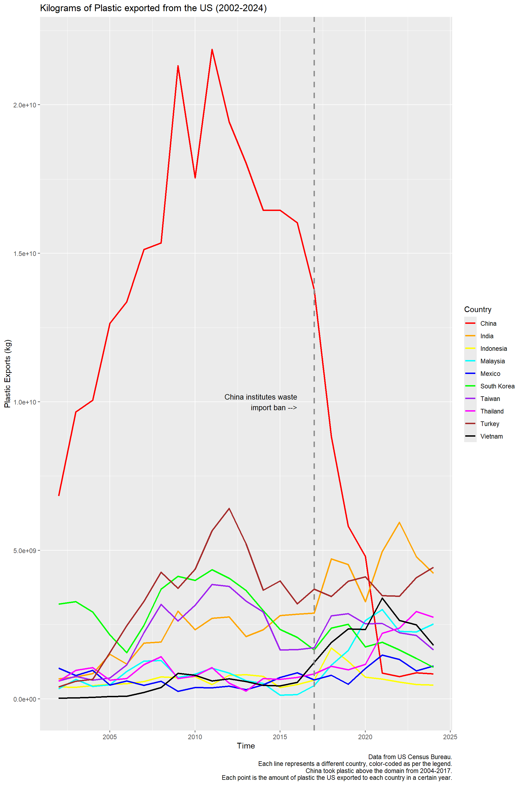
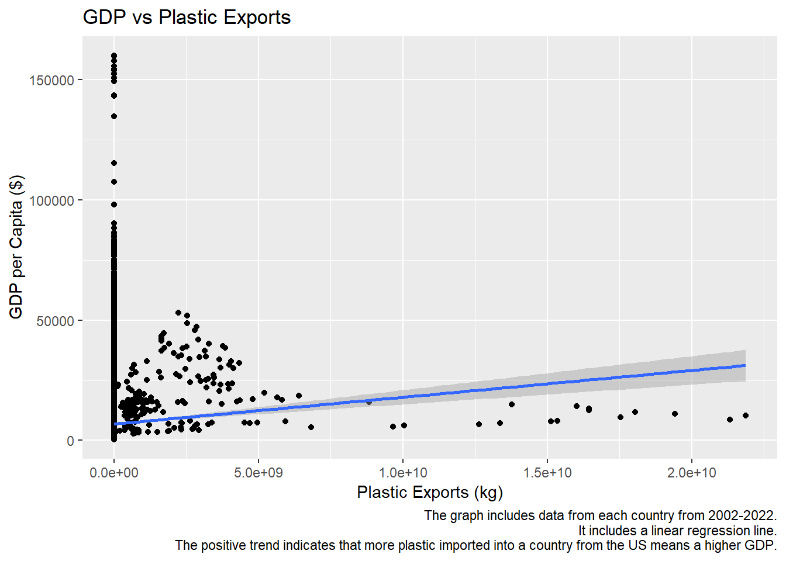
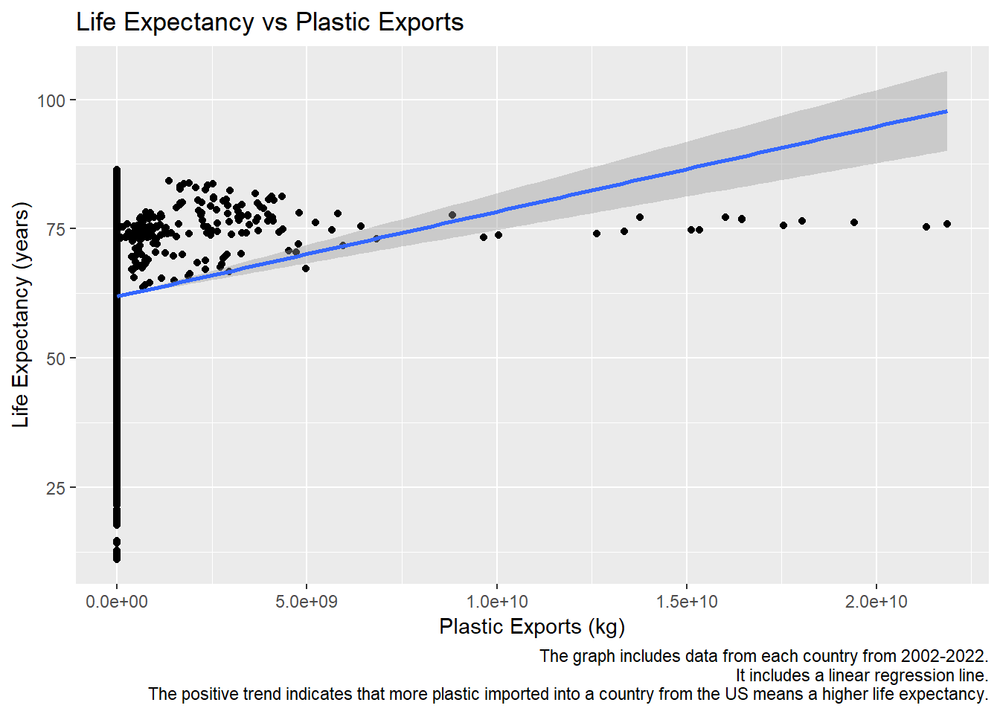
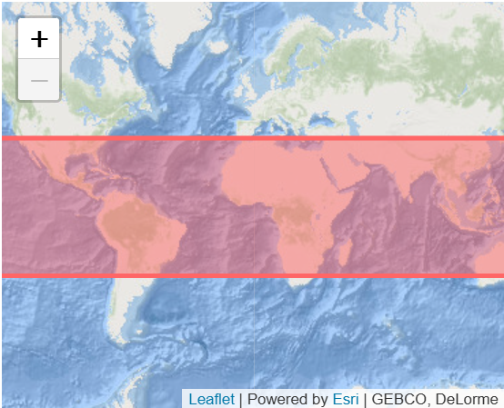
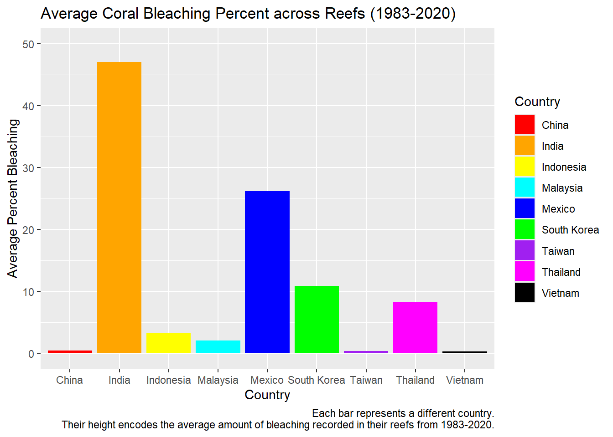
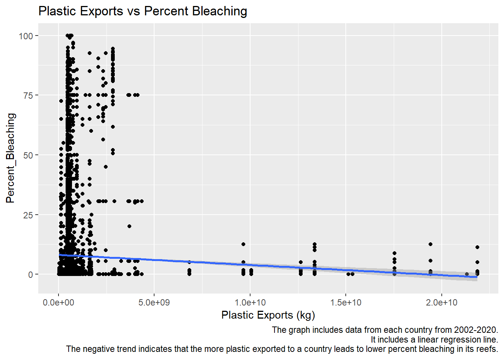

exports <- read.csv("data/PlasticExportsAllCountries.csv")
exports$Country <- replace(exports$Country, exports$Country=="Korea, South", "South Korea") # fix names
countriesALL <- unique(exports$Country)
colnames(exports)[which(names(exports) == "Vessel.Total.Exports.SWT..kg.")] <- "Plastic Exports (kg)" # Rename column to be more informativeCLES 131 Final Project: Marine Plastics
Table of Contents
- 3.1 Combining Data
- 3.2 Plotting the Data
- 3.3 Surprising Regressions!
- 4.1 Bleaching Data
- 4.2 Bleaching per Country
- 5.1 Bleaching vs Plastic
- 5.2 Regression
Problem Statement
Plastic production continues to increase by millions of tons annually, with 18% of it coming solely from North America and 46% from Asia (Thomas, et al. 2024).
With this sheer amount of plastic production, there is worry about managing plastic waste. While there are multiple types, one key factor of most plastics is their persistence; Plastic bags take about 100 years to decompose effectively (Dey, et al. 2023). Currently, the most common factors of plastic waste management are decomposition, incineration, and land filling (Dey, et al. 2023). Each of these methods create harmful byproducts for environments and the atmosphere. Land filling and discarded plastic in particular have detrimental effects on coastal ecosystems: specifically coral. When coral reefs come into contact with plastic, “likelihood of disease increases from 4% to 89%” (Lamb, et al. 2018). While any contact is harmful, microplastics in particular are a large threat due to their sheer magnitude. Their size is also an issue, as microplstics are defined as being plastic smaller than five millimeters long(NOAA, 2024). Corals end up ingesting these microplastics, which in turn hinder their growth and forces coral bleaching (Biswas, et al. 2024).
One question that may arise: What about recycling? Journalists from the Guardian found that most of the plastic recycled in the US ends up shipped to other countries and sold for profit. In 2015, about 1.6m tons of recycled plastic was sent to China and Hong Kong for processing, however the majority was contaminated or non-recyclable, adding to the plastic waste issue (McCormick, et al. 2019).
We plan on looking at this data of exported plastic from the US and compare it to both quality of life in these countries as well as the health of coral reefs along their coasts. We hope to answer our hypothesis:
Is there a relationship between US plastic exports and coral bleaching from microplastics?
US Plastic Exports
Sums of Plastic Exports
We want to get the sum of plastic exports in each country, to ultimately find which countries are taking in the most total exports from the US. The US Census Bureau keeps track of how many kilograms of plastic are exported and to where, so we will make use of this data.
sums <- c()
for (co in countriesALL){
temp <- exports |>
filter(Country == co)
sums <- c(sums, sum(temp$`Plastic Exports (kg)`))
}
total <- data.frame(countriesALL, sums) |>
arrange(desc(sums)) |>
slice(1:10)These will be our actual countries of interest; these are the top 10 countries that have taken the largest sum of US plastics from 2002-2025.
countries <- total$countriesALL
plastics <- exports |>
filter(Country %in% countries)
countries [1] "China" "Turkey" "India" "South Korea" "Taiwan"
[6] "Thailand" "Malaysia" "Vietnam" "Mexico" "Indonesia" Change Over Time
Now we can plot each of these top 10 countries, to see how much plastic they import from the US has changed over time.
plastics |>
filter(Time < "2025") |>
mutate(Time = as.integer(Time)) |>
ggplot(aes(
x=Time,
y=`Plastic Exports (kg)`,
group=Country,
color=Country)) +
geom_line(linewidth = 1) +
geom_vline(xintercept = 2017,
color = "gray55",
linetype = "dashed",
linewidth = 1) +
annotate("text",
x = 2017-1,
y = 1e+10,
label = "China institutes waste\nimport ban -->",
color = "black",
hjust = 1,
size = 3.5) +
scale_color_manual(values = c("China" = "red",
"India" = "orange",
"Indonesia" = "yellow",
"South Korea" = "green",
"Malaysia" = "cyan",
"Mexico" = "blue",
"Taiwan" = "purple",
"Thailand"="magenta",
"Turkey"="brown",
"Vietnam" = "black")) +
labs(title="Kilograms of Plastic exported from the US (2002-2024)",
caption="Data from US Census Bureau.\nEach line represents a different country, color-coded as per the legend.\nChina took plastic above the domain from 2004-2017.\nEach point is the amount of plastic the US exported to each country in a certain year.")
Looking at the plot, what interesting changes do you see? One general trend is how other countries seem to increase after China’s sharp decrease due to stricter import laws. But as of 2024, each country seems to be decreasing how much plastic they are accepting from the US with the exceptions of Turkey, Malaysia, and Mexico.
Difference in 2025
We can also see if these are still the top 10 countries in 2025. Let’s get the 2025 top 10 below.
top10_2025 <- plastics |>
filter(Time == "2025 through July") |>
arrange(desc(`Plastic Exports (kg)`)) |>
slice(1:10)
top10_2025 <- top10_2025$Country
top10_2025 [1] "India" "Turkey" "Thailand" "Vietnam" "Malaysia"
[6] "Taiwan" "South Korea" "Mexico" "Indonesia" "China" Let’s see the difference between the total (2002-2025) top 10 and the 2025 top 10!
intersect(countries, top10_2025) [1] "China" "Turkey" "India" "South Korea" "Taiwan"
[6] "Thailand" "Malaysia" "Vietnam" "Mexico" "Indonesia" They are still the same! Even with stricter import laws in Hong Kong and China, they are still at the top of the list for US plastic imports, although the actual placements in the top 10 may have changed.
Quality of Life
Combining data
Our World in Data is a UK non-profit focused on compiling global data about poverty, disease, hunger, climate change, war, existential risks, and inequality. We are using their data on the GDP and Life expectancy in each country over time. Lets combine that with our plastic data to see if there are any trends with quality of life and how much plastic is imported from the US.
quality <- read.csv("data/life-expectancy-vs-gdp-per-capita.csv")
# Rename columns for clarity
colnames(quality)[which(names(quality) == "gdp_per_capita")] <- "GDP per Capita ($)"
colnames(quality)[which(names(quality) == "life_expectancy_0")] <- "Life Expectancy (years)"plastics <- plastics |>
mutate(Time = as.integer(Time))Warning: There was 1 warning in `mutate()`.
ℹ In argument: `Time = as.integer(Time)`.
Caused by warning:
! NAs introduced by coercionqualityPlastic <- left_join(x = quality, y = plastics, by=join_by(Entity == Country, Year == Time))Now we have added a column in our country data to include the kilograms of plastic imported from the US in each country.
Plotting the data
Lets start by plotting our top 10 countries as the years go by. We can size each point by how much plastic it imported from the US in that year.
# Following: https://plotly.com/ggplot2/animations/
qualityPlastic$`Plastic Exports (kg)`[is.na(qualityPlastic$`Plastic Exports (kg)`)] <- 3 # Make sure US is not size 0
p <- qualityPlastic |>
filter(Entity %in% countries & Year > 2002 & Year < 2023)
plot <- p|>
ggplot(aes(x = `GDP per Capita ($)`,
y = `Life Expectancy (years)`,
color = Entity)) +
scale_color_manual(values = c("China" = "red",
"India" = "orange",
"Indonesia" = "yellow",
"South Korea" = "green",
"Malaysia" = "cyan",
"Mexico" = "blue",
"Taiwan" = "purple",
"Thailand"="magenta",
"Turkey"="brown",
"Vietnam" = "black",
"United States" = "gray")) +
geom_point(aes(size=`Plastic Exports (kg)`, frame = Year)) +
geom_point(data=qualityPlastic |>
filter(Entity=="United States" & Year > 2002 & Year < 2023), aes(frame = Year)) +
labs(title="GDP vs Life Expectancy, Sized by US Plastic Imports (2002-2022)",
caption="Each dot represents a country, color-coded as per the legend.\nEach dot is sized by the amount of plastic imported from the US each year.\nThe gray dot is the US and has a constant size.\nHover over each point to see its information.\nDouble-click on a country in the legend to only see that point, click others to include more.")Warning in geom_point(aes(size = `Plastic Exports (kg)`, frame = Year)):
Ignoring unknown aesthetics: frameWarning in geom_point(data = filter(qualityPlastic, Entity == "United States" &
: Ignoring unknown aesthetics: frameggplotly(plot)Each dot represents a country, color-coded as per the legend.
Each dot is sized by the amount of plastic imported from the US each year.
The gray dot is the US and has a constant size.
Hover over each point to see its information.
Double-click on a country in the legend to only see that point, click others to include more.
While there are dots all over this plot, we can see each of our countries had a lower GDP than the small gray dot of the US. Surprisingly, though, there are a wide variety of life expectancies among the top 10 countries to take in plastic imported from the US.
Watching the animation of changes over time, one big trend we can notice is a global dip in life expectancy following Covid-19. Other than that, each country seems to be moving upwards and to the right over time.
Are there any issues you can find with choosing GDP per capita and life expectancy as indicators of quality of life? Think about how we find averages!
Surprising Regressions!
While it may seem like large amounts of plastic imports would detriment rather than help a country’s wellbeing, there is actually a strong positive trend between kilograms of plastic imports and both GDP and life expectancy!
What do you think contributes to this relationship? One interesting fact is that plastic waste that is exported from the US is sold for profit to recycling centers (McCormick, et al. 2019); Some people do benefit by taking in plastic from the US.
GDPRel <- lm(`Plastic Exports (kg)` ~ `GDP per Capita ($)`, data = qualityPlastic)
summary(GDPRel)
Call:
lm(formula = `Plastic Exports (kg)` ~ `GDP per Capita ($)`, data = qualityPlastic)
Residuals:
Min 1Q Median 3Q Max
-3.714e+08 -2.750e+07 -1.751e+07 -1.507e+07 2.183e+10
Coefficients:
Estimate Std. Error t value Pr(>|t|)
(Intercept) 1.182e+07 3.888e+06 3.04 0.00237 **
`GDP per Capita ($)` 2.247e+03 3.053e+02 7.36 1.91e-13 ***
---
Signif. codes: 0 '***' 0.001 '**' 0.01 '*' 0.05 '.' 0.1 ' ' 1
Residual standard error: 4.81e+08 on 21584 degrees of freedom
(42972 observations deleted due to missingness)
Multiple R-squared: 0.002503, Adjusted R-squared: 0.002457
F-statistic: 54.17 on 1 and 21584 DF, p-value: 1.906e-13ggplot(data = qualityPlastic, aes(x = `Plastic Exports (kg)`, y = `GDP per Capita ($)`)) +
geom_point() +
geom_smooth(method = "lm") +
labs(title="GDP vs Plastic Exports",
caption="The graph includes data from each country from 2002-2022.\nIt includes a linear regression line.\nThe positive trend indicates that more plastic imported into a country from the US means a higher GDP.")`geom_smooth()` using formula = 'y ~ x'Warning: Removed 42972 rows containing non-finite outside the scale range
(`stat_smooth()`).Warning: Removed 42972 rows containing missing values or values outside the scale range
(`geom_point()`).
LifeRel <- lm(`Plastic Exports (kg)` ~ `Life Expectancy (years)`, data = qualityPlastic)
summary(LifeRel)
Call:
lm(formula = `Plastic Exports (kg)` ~ `Life Expectancy (years)`,
data = qualityPlastic)
Residuals:
Min 1Q Median 3Q Max
-8.487e+07 -5.105e+07 -3.333e+07 -5.513e+06 2.181e+10
Coefficients:
Estimate Std. Error t value Pr(>|t|)
(Intercept) -115062464 16137962 -7.130 1.04e-12 ***
`Life Expectancy (years)` 2314761 255039 9.076 < 2e-16 ***
---
Signif. codes: 0 '***' 0.001 '**' 0.01 '*' 0.05 '.' 0.1 ' ' 1
Residual standard error: 484100000 on 21563 degrees of freedom
(42993 observations deleted due to missingness)
Multiple R-squared: 0.003806, Adjusted R-squared: 0.003759
F-statistic: 82.38 on 1 and 21563 DF, p-value: < 2.2e-16ggplot(data = qualityPlastic,
aes(
x = `Plastic Exports (kg)`,
y = `Life Expectancy (years)`)) +
geom_point() +
geom_smooth(method = "lm") +
labs(title="Life Expectancy vs Plastic Exports",
caption="The graph includes data from each country from 2002-2022.\nIt includes a linear regression line.\nThe positive trend indicates that more plastic imported into a country from the US means a higher life expectancy.")`geom_smooth()` using formula = 'y ~ x'Warning: Removed 42993 rows containing non-finite outside the scale range
(`stat_smooth()`).Warning: Removed 42993 rows containing missing values or values outside the scale range
(`geom_point()`).
Coral Bleaching
Bleaching Data
We are using data from BCO-DMO, a data repository funded by the NSF and containing crowdsourced oceanographic data. We are using their dataset on coral bleaching from 1980-2020. The dataset includes data from all reefs in the below spatial area.

As this dataset is huge, we want to narrow down to three columns: The year of the data collection, the country the reef belongs to, and the percent bleaching of the reef. We also want to narrow down to only the top 10 countries we are interested in, with the exception of Turkey that has no reefs along its coast.
Bleaching <- read_csv("data/global_bleaching_environmental (3).csv")Warning: One or more parsing issues, call `problems()` on your data frame for details,
e.g.:
dat <- vroom(...)
problems(dat)Rows: 41361 Columns: 62
── Column specification ────────────────────────────────────────────────────────
Delimiter: ","
chr (52): Data_Source, Ocean_Name, Reef_ID, Realm_Name, Ecoregion_Name, Cou...
dbl (9): Site_ID, Sample_ID, Latitude_Degrees, Longitude_Degrees, Turbidit...
date (1): Date
ℹ Use `spec()` to retrieve the full column specification for this data.
ℹ Specify the column types or set `show_col_types = FALSE` to quiet this message.Bleaching$Country_Name <- replace(Bleaching$Country_Name, Bleaching$Country_Name=="Japan", "South Korea")
# Japan and South Korea share coral reefs hence above code
Bleaching$Percent_Bleaching <- replace(Bleaching$Percent_Bleaching, Bleaching$Percent_Bleaching=="nd", "0")
countries_use <- c(
"China", "India", "Indonesia", "South Korea", "Malaysia", "Mexico",
"Taiwan", "Thailand", "Vietnam"
)
# explained by https://www.statology.org/r-select-rows-by-condition/
clean_bleaching <- Bleaching[Bleaching$Country_Name %in% countries_use,
c("Country_Name", "Percent_Bleaching", "Date_Year")]
clean_bleaching <- clean_bleaching |>
dplyr::mutate(
Percent_Bleaching = dplyr::na_if(Percent_Bleaching, "nd"),
Percent_Bleaching = as.numeric(Percent_Bleaching)
)Bleaching per Country
Since there are large variations in the number of samples for each country, we want to average across each sample to find a normalized amount of bleaching across the reefs of each country. We also need to average across years, as almost each country is not sampled each year.
blCountries <- unique(clean_bleaching$Country_Name)
bleachAverages <- c()
for (c in blCountries){
vals <- clean_bleaching |>
filter(Country_Name==c)
avg <- mean(vals$Percent_Bleaching)
bleachAverages <- c(bleachAverages, avg)
}
clean_bleaching_avg <- data.frame(Country = blCountries, Percent_Bleaching_Avg = bleachAverages)clean_bleaching_avg |>
ggplot(aes(
x = Country,
y = Percent_Bleaching_Avg,
fill = Country
)) +
geom_col() +
scale_fill_manual(values = c(
"China" = "red",
"India" = "orange",
"Indonesia" = "yellow",
"Malaysia" = "cyan",
"Mexico" = "blue",
"Taiwan" = "purple",
"Thailand" = "magenta",
"Vietnam" = "black",
"South Korea" = "green"
)) +
ylim(0, 50) +
labs(
x = "Country",
y = "Average Percent Bleaching",
title = "Average Coral Bleaching Percent across Reefs (1983-2020)",
caption="Each bar represents a different country.\nTheir height encodes the average amount of bleaching recorded in their reefs from 1983-2020."
) 
Looking at our bars, we can see India and Mexico have significant increased bleaching compared to the other countries graphed. Another surprising trend is that China is near 0 despite being the number 1 importer of US plastics for many years, and by a long shot! The main driver of coral bleaching is ocean surface temperature, so the temperature of each reef sampled could effect how microplastics effect them.
Since we are plotting averages, we also want to make sure we have a proportionate amount of samples for each country. Lets list the number of samples for each below.
sampleCounts <- c()
for (c in blCountries){
vals <- clean_bleaching |>
filter(Country_Name==c)
count <- length(vals$Percent_Bleaching)
sampleCounts <- c(sampleCounts, count)
}
clean_bleaching_cnts <- data.frame(Country = blCountries, Number_Samples = sampleCounts)
clean_bleaching_cnts Country Number_Samples
1 Mexico 2151
2 Indonesia 2923
3 India 99
4 Thailand 655
5 South Korea 1253
6 Malaysia 4581
7 Taiwan 680
8 Vietnam 1390
9 China 752Looking at the numbers, we can see Malaysia is very oversampled and India are very undersampled. There is quite a variance in magnitude of samples across countries, so we need to be mindful of these differences when we compare their averages. For example, we should consider India’s bleching to be around 45% rather than exactly 45%, due to the limited amount of samples we are averaging across.
Relation to Plastic Imports
Bleaching vs Plastic
Now that we have seen the amount of bleaching in each of our countries, lets compare it with the amount of plastic imported from the US into each.
We first need to join our datasets by Country and Year.
importCoral <- left_join(x = clean_bleaching, y = plastics, by=join_by(Country_Name == Country, Date_Year == Time))Now we can plot to see if the percent amount of bleaching in each country tends to increase with the amount plastic exported from the US to that reef’s country.
scatter <- importCoral |>
ggplot(aes(
x=`Plastic Exports (kg)`,
y=Percent_Bleaching,
group=Date_Year,
color=Country_Name)) +
geom_point() +
scale_color_manual(values = c("China" = "red",
"India" = "orange",
"Indonesia" = "yellow",
"South Korea" = "green",
"Malaysia" = "cyan",
"Mexico" = "blue",
"Taiwan" = "purple",
"Thailand"="magenta",
"Turkey"="brown",
"Vietnam" = "black")) +
labs(title="Percent Bleaching vs US Plastic Imports (2002-2020)")
ggplotly(scatter)Each dot represents a sample taken of a countries coral reef, color-coded as per the legend.
The position of each dot shows the percent bleaching of that reef sample as well as the amount of plastic exported to that country the year that sample was collected.
Hover over each point to see its information, including the Year of that particular sample.
Double-click on a country in the legend to only see its points, click others to include more.
These results are quite surprising! The points to the left corresponding to countries which take in less plastic from the US tend to have much higher points and in turn much higher bleaching. As we saw in the bar graph, China has very low percentage of bleaching despite taking in the most plastic from the US overall.
Regression
Let’s do some regression line to see some statistical analysis.
BlPlas <- lm(Percent_Bleaching ~ `Plastic Exports (kg)`, data = importCoral)
summary(BlPlas)
Call:
lm(formula = Percent_Bleaching ~ `Plastic Exports (kg)`, data = importCoral)
Residuals:
Min 1Q Median 3Q Max
-8.148 -7.938 -7.556 -2.503 92.130
Coefficients:
Estimate Std. Error t value Pr(>|t|)
(Intercept) 8.159e+00 1.811e-01 45.054 <2e-16 ***
`Plastic Exports (kg)` -4.250e-10 4.629e-11 -9.181 <2e-16 ***
---
Signif. codes: 0 '***' 0.001 '**' 0.01 '*' 0.05 '.' 0.1 ' ' 1
Residual standard error: 18.2 on 12601 degrees of freedom
(1881 observations deleted due to missingness)
Multiple R-squared: 0.006645, Adjusted R-squared: 0.006566
F-statistic: 84.29 on 1 and 12601 DF, p-value: < 2.2e-16importCoral |>
ggplot(aes(
x=`Plastic Exports (kg)`,
y=Percent_Bleaching,)) +
geom_point() +
geom_smooth(method = "lm") +
labs(title="Plastic Exports vs Percent Bleaching",
caption="The graph includes data from each country from 2002-2020.\nIt includes a linear regression line.\nThe negative trend indicates that the more plastic exported to a country leads to lower percent bleaching in its reefs.")`geom_smooth()` using formula = 'y ~ x'Warning: Removed 1881 rows containing non-finite outside the scale range
(`stat_smooth()`).Warning: Removed 1881 rows containing missing values or values outside the scale range
(`geom_point()`).
We have a negative trend! It is clear by looking at the dots, as well. This means that we actually see a trend of lower percentage bleaching in countries that take in more plastic from the US. Huh!
Can you think of why this could be? Rather than an actual real-life trend, think about how we collected the data, and what data we included in our analysis.
Conclusion
Based on what we found, it seems like the answer to our question would be no! We did not find evidence of a relationship between US plastic exports and coral bleaching from microplastics. However, the data doesn’t conclusively tell us that there is no relationship.
What data would we want to conclusively answer our hypothesis?
We would need our measurements to correspond between our US plastics export data and our coral bleaching data. Since we sort the plastic exports by country and year, our bleaching data should be sorted similarly. We have a list of a number of samples from reefs off the coast of the countries we are interested in, collected over the span of 40 years. This data does not follow a regular time scale and is based on particular reefs rather than countries. What we want is the amount of bleaching across all coasts of the country, not just in individual reefs, and collected at the same times each year. This way our bleaching and plastic data would be on the same temporal and spatial scale. However, the challenge with using countries as a spatial scale is that coral reefs are not always associated with a specific country, and may border multiple.
While this wasn’t directly what we were asking, our comparison of quality of life with US plastic exports is also not conlcusive. Rather than averaging GDP and Life Expectancy across entire countries, we should compare across relevant actors: plastic sellers and plastic sorters in each of the countries we are concerned with. In order to fully understand the social justice implications of plastic exports, we need data on health and wealth disparities between plastic sorters and those profiting off of plastic exports.
Overall, we did collect and visualize interesting data on US Plastic Exports and Coral Bleaching, as well as other country data. Although we did not reach a conclusive answer to our question, we have a good springboard for further exploration using other datasets.